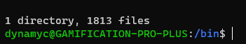
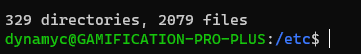
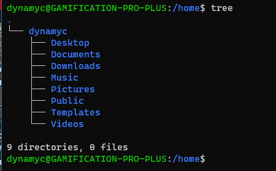
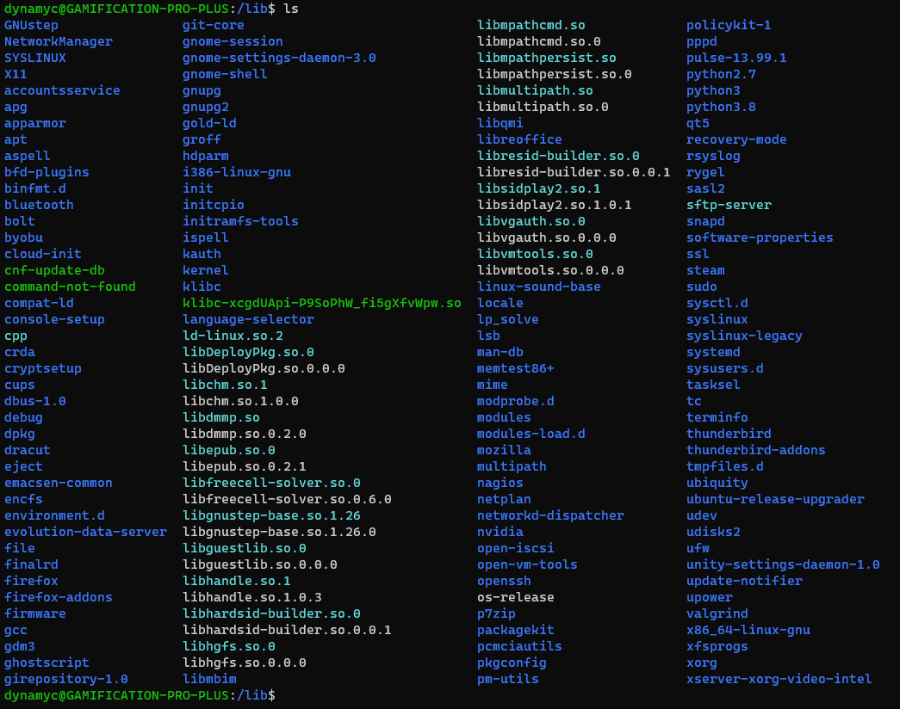
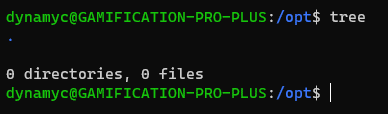
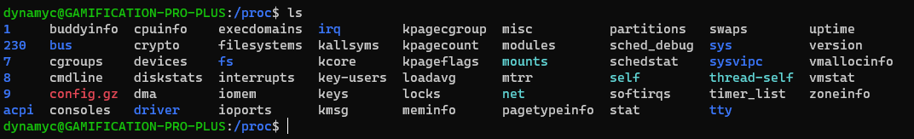
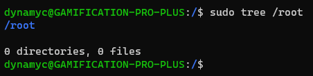
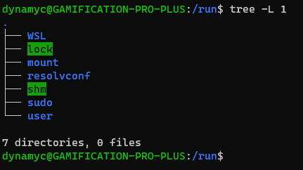

Mai napjainkban a Linux alapú rendszerek általában ugyanúgy néznek ki, de kezdő Linuxosként lehet, hogy kérdezted már azt, hogy „Mik azok a mappák, melyeket a merevlemez legalján látok? Mire jók?”
Nos, ezen mappák legtöbbje a rendszer futtatásához szükséges (nah, ki gondolta volna, Sherlock), de tényleg, mire is jók?
A /bin mappa az binárisaidat, azaz a rendszered alapvető alkalmazásaid tartalmazza, mint például az ls, vagy akár a firefox. Máshol is találhatók „bin” nevű mappák, de azokról később beszélek.
Ez a mappa meglepően az indításhoz szükséges fájlokat tartalmazza. Most mondom: NE NYÚLJ HOZZÁ!
Egy fájl törlése vagy akár átnevezése is végzetes lehet a rendszereden, úgyhogy kerüld az ebben a mappában történő nyúlkálást, hacsak nem tudod mit csinálsz.
Aggódnod viszont nem kell, hogy véletlen kitörölsz valamit innen, mert Superuser nélkül nem tudsz ebben a mappában semmit változtatni.
Ez a mappa az eszközeidnek az elérési pontjai.
Ezek a fájlok indításkor, vagy akár futtatás közben is létrejöhetnek. Ha bedugsz egy USB eszközt a gépedbe, innen eltudod érni, legyen az Pendrive, vagy egy Webkamera.
Ebben a mappában lehet, hogy összezavarodsz. Nyugi, én is úgy voltam.
Eredetileg, a Linux korai napjaiban, ez a mappa az „et cetera” nevezést hordozta, ahol olyan dolgokat tároltak, melyeknek helyét nem tudták hova meghatározni.
Mai napjainkban inkább egy olyan hely, ahol a rendszernek azon fájlait tartja a Linux, melyek a rendszered beállításaid tartalmazza. Például a rendszered nevét, felhasználóit, jelszavait, a gépeddel egy hálózaton levő gépek nevét, és hogy a merevlemezeidet hova kéne csatlakoztatni.
Ha még új vagy a Linux világában, nem ajánljuk, hogy nyúlkálj nagyon itt, hacsak nem tudod, hogy működik ez az egész.
Ez a mappa a gépen levő felhasználók személyes fájlait tartalmazza. A mappa neve a felhasználónévből jön, esetemben /home/dynamyc létezik. Ezekben a mappákban általában biztonságban nyúlkálgathatsz.
Ezen a helyek az alkalmazásoknak a könyvtárjai élnek. Ezt Windows alatt „DLL”-nek, vagy „Dynamic-link Library”-nak ismerheted. Ezek segítségével tudja a rendszered kirajzolni az ablakokat, az egeredet feldolgozni és merevlemezre küldeni fájlokat.
Ebben a mappában legfőképpen a legfontosabb kernel modulokat tartalmazza, olyasmik, mint a Windowsban az illesztőprogramok.
Ebbe a mappába olyan eszközök csatolódnak fel, mint a frissen bedugott Pendrive-od.
Ez régen még nem létezett, mert nem voltak olyan eszközök, melyeket könnyen le- és
felcsatolni lehetett volna. Egyszerűen nem voltak támogatottak.
Ebbe a mappába a forráskódokból készített programok kerülnek, néha. /opt/bin-be az alkalmazások, /opt/lib-be a könytárak.
Ez a mappa, mint a /dev, egy virtuális mappa. Ez a mappa a géped hardwaréről és a Linux kernelről tartalmaz információkat. Ugyanúgy ezek gép indításakor és futtatása közben is létrejöhetnek.
Ez a Superuser (másnéven „Adminisztrátor”) mappája. NE ide pakold a fájlaidat, nem arra van. Használd a /home-ban levő mappád erre.
Ez a mappa az éppen futó alkalmazásoknak az ideiglenes fájlait tartalmazza. Megint csak, NE NYÚLKÁLJ IDE, vagy az alkalmazásaid, lehetségesen a teljes rendszered lecrashelhet.
(a WSL mappa az a Windows Subsystem for Linux miatt van ott. Ha natívan futtatod, nem lesz ott.)